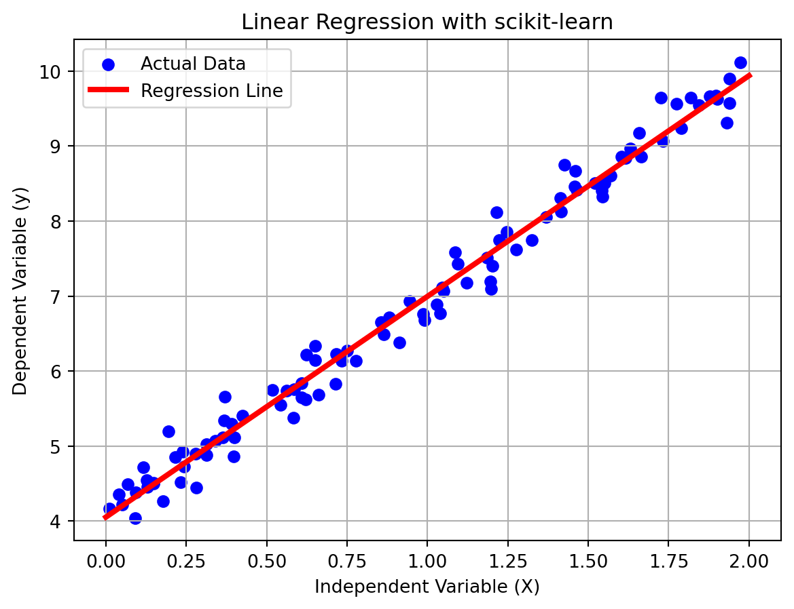

You heard stories from your parents like this – click on me!!! I was much luckier than that; I could learn Pascal in highschool, and then C++ at \(18\). Nevertheless, \(\ldots\)
I did not have GenAI chatbots like ChatGPT, Gemini, CoPilot. In fact, stackoverflow (created by Jeff Atwood and Joel Spolsky in 2008) was not even a thing at that time
The \(100\%\) course grade was entirely decided by one single paper exam. If we were lucky, roughly \(30\%\) would be assigned to a team project.
Yes, you did not read it wrong. It was not long time ago. We completed the course by taking one single paper exam in which we must literally write C++ code on paper. Henceforth, the only one to prepare for the exam is to practice as much as possible to get ready for one single shot. There are both advantages and disadvantages:
Advantage: You have to learn basic details with little instructions. You cannot get away with good grades/passing grades with the so-called sufficient knowledge.
Disadvantage: Learning curve is steep and it took sometimes too much time to finish a simple task.
If you still don’t belive me, read the file programming_exams.html.
POV of a lecturer
First of all, I have taught several courses involving heavy programming course work since 2017. I notice, actually know for sure, from my own teaching and marking experience within the last two years that I have marked ChatGPT’s submissions more than students’ submissions.
That’s fine, it’s your future, not mine 😏.
At one point, I know that I cannot stop you to use ChatGPT – So I joined the force since 2025 (just roughly half a year). No matter how many exercises I assigned, one could easily solve all of them in less than \(1\) hour, without understanding a single line of code. Indeed, I copied/pasted my entire question in ChatGPT or Gemini and got the solution in return without any single error. Here are my own stories:
As for ENG3091 last year, several students got less than \(5/35\) points for the coding question and less than \(3/15\) for questions about C++ programming. Several students got points because they wrote something (I gave \(1\) point for making attempt), not because they answered the questions correctly.
If I was not lenient, several students actually got completely \(0/50\) for the C++ coding part. Some students wrote literall English in coding questions. Ironically, they finished the mid-term assignments with all A-band grades.
In the Teaching Committee, a few professors stated that for the first time of their teaching experience, they marked \(0/100\).
Indeed, last semester a few students just confessed upfront that they used ChatGPT to solve the assignments and asked for the passing grades instead of trying to answer my questions.
Rationale on the length of the assignment
Why is the assignment so long?
Here is my experience. If I give one single assignment with a significantly meaningful topic, you will skip all the practice opportunities and finally end up using ChatGPT to solve the final exam – Again, I saw and marked more than AI-geneted code than you could imagine.
The first part of the assignment gives you the opportunities to practice writing code in C++. The second part of the assignment introduce you to the simplest knowledge in the machine learning world: Linear Regression.
My advices
I encourage you to try to solve the exercises using just Google, stackoverflow, before trying to use ChatGPT, Gemini or CoPilot.
If you decide to use GenAI Chatbots, you should try to refrain yourself from copy/paste the solution in a bruteforce manner. Instead, you should ask them for knowledge you want to learn.
Keep in mind that you will have to write C++ code on paper in the final paper exam.
Good habits compound, so do bad habits.
Task 1
In the first task, you need to write C++ programs to solve two out of three problems you have solved in Python.
Problem
Points
Fixed-point and Newton-Raphson methods for solving nonlinear equation
15/100
Rouge-like room and moving the player in the room
15/100
The tic-tac-toe game
15/100
Python is not the focus of our course. The problems and their solution in Python code are provided.
Essentially, you learn to translate Python code into C++ code with the knowledge you will learn in this course.
You can use object-oriented programming (OOP) if you want. However, it won’t give extra points by using OOP.
You won’t have extra points for solving all three problems.
You need to write significantly meaningful comments in your code.
The deadline for this assignment is pretty far. So don’t worry too much.
Submit the source code. Explain how to compile the source code to obtain the executable files.
Feel free to use GenAI chatbots to learn anything you need.
Task 2
Intro: This year I decide to roll out a slightly more challenging problems but also more fun to do as compared to those given in the prior years. My aim is to provide you an opportunity to learn machine learning. I hope that in the end of the Assignment 2, we can build a program to classify hand-written digits: \(0, 1, \ldots, 9\).
In this task, we will build a linear regression model, which is the first step of building a complex neural network.
Problem description
You can read this wikipedia: Linear Regression for multi-dimensional linear regression. But my description will use different notations.
Imagine that an Estate Agent/Glasgow Council gives us a task of predicting the house price in Glasgow by using various features of a house/flat such as number of bedrooms, total living area, distance to schools and city center and so on. Mathematically speaking, we need to build a prediction model that can be represented by a mapping \[
y = f(x_1, x_2, \ldots, x_n), \quad y=\text{house price}
\] and \(x_1, x_2, \ldots, x_n\) correspond to the features of the house. For example, \(x_1\) is the total living area, \(x_2\) is the number of bedrooms, \(x_3\) is the distance to the city center and so on. The prediction model, represented by \(f\), estimates the relationship between a scalar response (dependent variable \(y\)) and one or more explanatory variables (independent variable \(\mathbf{x}\)) The ultimate goal is to seek the function \(f\).
Example
We go around the city of Glasgow and collect the dataset \(\mathcal{D}\) of \(m\) data points:
\[
\mathcal{D} = \big\{ (\mathbf{x}^{(1)}, y^{(1)}), (\mathbf{x}^{(2)}, y^{(2)}), \ldots (\mathbf{x}^{(m)}, y^{(m)})\big\}.
\tag{1}\] Note that one single data point comprises both \(\mathbf{x} \in \mathbb{R}^{n}\) and \(y \in \mathbb{R}\) components. If we try to predict the house price by using only one feature such as total living area \(x_1\), then we have a dataset as \[
\mathcal{D} = \big\{ (x^{(1)}, y^{(1)}), (x^{(2)}, y^{(2)}), \ldots (x^{(m)}, y^{(m)})\big\}.
\] If we try to predict the house price by using two features \(x_1\) and \(x_2\) (number of bedrooms), the we have a dataset as
\[
\mathcal{D} = \big\{ ((x_1^{(1)}, x_2^{(1)}), y^{(1)}), ((x_1^{(2)}, x_2^{(2)}), y^{(2)}), \ldots ((x_1^{(m)}, x_2^{(m)}), y^{(m)})\big\}.
\] Now, you can imagine the kind of dataset we are dealing with if we decide to use more than \(2\) features to predict the house price. In fact, \(x_1, x_2, \ldots\) are called features
Simple linear regression
Let us simplify the above problem to prediction of the house price based on the total living area of the house. In this case, the vector \(\mathbf{x}\) becomes a scalar \(x\), and our dataset looks like \[
\mathcal{D} = \big\{ (x^{(1)}, y^{(1)}), (x^{(2)}, y^{(2)}), \ldots (x^{(m)}, y^{(m)})\big\}.
\]
The simplest prediction model we can build is the simple linear regression. In statistics, simple linear regression is a linear regression model with a single independent variable.
Consider the model function \[
(M):\qquad \widehat{y} = f_{w, b}(x) := w x + b
\tag{2}\] which describes a line with the slope \(w\) and \(y\)-intercept value \(b\). We wan to look for \(w\) and \(b\) so that the line fits the dataset \(\mathcal{D}\) as much as possible. Since the model will be trained or learned through an iterative process, the parameters \(w\) and \(b\) are called learnable parameters.
If we can manage to do so, given a particular total living area \(A\), we can make the prediction that the house price should be approximate to \(f_{w, b}(A)\). That’s it; we collect the money from the Agency and Glasgow Council – Smiley.
See the code snippet and the output to understand my point:
import numpy as npimport matplotlib.pyplot as pltfrom sklearn.linear_model import LinearRegression# 1. Generate Synthetic Datanp.random.seed(42) # For reproducibilityX =2* np.random.rand(100, 1) # 100 random points (Features)# Formula: y = 4 + 3x + Gaussian noisey =4+3* X +0.25*np.random.randn(100, 1) # 2. Initialize and Train the Modelmodel = LinearRegression()model.fit(X, y)# 3. Make Predictions# Create new data points to plot the regression lineX_new = np.array([[0], [2]])y_predict = model.predict(X_new)# 4. Resultsprint(f"Intercept (b): {model.intercept_[0]:.4f}")print(f"Coefficient (m): {model.coef_[0][0]:.4f}")# 5. Visualize the resultplt.scatter(X, y, color='blue', label='Actual Data')plt.plot(X_new, y_predict, color='red', linewidth=3, label='Regression Line')plt.grid(True)plt.xlabel("Independent Variable (X)")plt.ylabel("Dependent Variable (y)")plt.title("Linear Regression with scikit-learn")plt.legend()plt.show()
Intercept (b): 4.0538
Coefficient (m): 2.9425

Building a linear regression model
Let us assume that we have only \(2\) data points. Obviously, the best line to fit two data points is the line going through both data points. However, when we have more than \(2\) data points and they do not lie on one single line, we have to find a way to measure the fitness of the model.
Using the model \((M)\), the absolute error between the prediction \(\widehat{y}^{(1)} = f_{w,b}(x^{(1)})\) and the observed value \(y^{(1)}\) is
The average error of all the absolute errors between the prediction of the model at the data input \(x^{(i)}\) and the data output \(y^{(i)}\) is given by
\[
Q(m, w) = \frac{1}{m}\sum\limits_{i=1}^{m}\big|\widehat{y}^{(i)} - y^{(i)} \big| = \frac{1}{m}\sum\limits_{i=1}^{m}\big|w x^{(i)} + b - y^{(i)} \big|.
\] We see that this average error \(Q\) is just a function of the parameters \(w\) and \(b\), because \(x^{(i)}\) and \(y^{(i)}\) are given from the dataset. To find the best fit of the model, we only need to minimize the the average error \(Q(w, b)\):
\[
\min\limits_{w, b} Q(w, b)\quad\longrightarrow w, b
\]
However, it turns out that minimizing the function \(Q(w, b)\) is not convenient because it involves absolutes of multiple values. To overcome this issue, we can consider the squared error for one single data point \[
\varepsilon^2 = (\widehat{y}^{(i)} - y^{(i)})^2 = (w x^{(i)} + b - y^{(i)})^2
\] and consider the mean squared error function \(\mathcal{L}\) instead of the function \(Q\) as follows \[
\mathcal{L}(w, b) = \frac{1}{2m} \sum\limits_{i=1}^{m} (\widehat{y}^{(i)} - y^{(i)})^2 =\frac{1}{2m} \sum\limits_{i=1}^{m} (w x^{(i)} + b - y^{(i)})^2
\tag{3}\] Function \(\mathcal{L}\) is called loss function in the optimization theory and machine learning community. Note that the factor \(2\) is added for convenience of computing the gradient of \(\mathcal{L}\) and it does not change the optimal learning parameters. By minimizing the loss function \(\mathcal{L}\) with respect to two parameters \(w\) and \(b\), we obtain the linear regression model that best fit the dataset \(\mathcal{D}\):
\[
\min\limits_{w, b}\mathcal{L}(w, b)\quad\longrightarrow w, b
\]
Computation of the model parameters
No matter how many data points \(\mathcal{D}\) has, the loss function \(\mathcal{L}(w, b)\) is obviously a quadratic function of \(w\) and \(b\). If you don’t believe me, try to compute \(\mathcal{L}(w, b)\) with \(2\) data points, and with \(3\) data poitns and then with \(4\) data points to convince yourself. For this reason, the minimization of \(\mathcal{L}\) can be easily computed and there is a unique optimal solution \((w^{\ast}, b^{\ast})\) to minimize \(\mathcal{L}(w, b)\).
A – Normal equation
Indeed, from basic mathematics , you should have learned that the optimal solution \((w^{\ast}, b^{\ast})\) is obtained by solving the the system of equations \[
\nabla \mathcal{L}(w, b) = 0 \quad\Leftrightarrow\quad \left\{\begin{aligned}
\frac{\partial \mathcal{L}}{\partial w} &= 0 \\[6pt]
\frac{\partial \mathcal{L}}{\partial b} &= 0
\end{aligned}\right.
\] By carrying out some algebraic computation, we end up with the solution1: \[
\begin{aligned}
w^{\ast} &= \frac{\sum\limits_{i=1}^{m}(x^{(i)} - \overline{x})(y^{(i)} - \overline{y})}{\sum\limits_{i=1}^{m} (x^{(i)} - \overline{x})^2}, \\[3pt]
b^{\ast} &= \overline{y} - w^{\ast} \cdot \overline{x},
\end{aligned}
\tag{4}\] where \(\overline{x}\) and \(\overline{y}\) are the average of the \(x^{(i)}\) and \(y^{(i)}\), respectively: \[
\overline{x} = \frac{1}{m}\sum\limits_{i=1} x^{(i)},\qquad \overline{y} = \frac{1}{m}\sum\limits_{i=1} y^{(i)}
\]
The above result can be expanded to the following expression: \[
\begin{aligned}
w^{\ast} &= \frac{m \sum_{i=1}^{m} x^{(i)} y^{(i)} - \sum_{i=1}^{m} x^{(i)} \sum_{i=1}^{m} y^{(i)}}{m \sum_{i=1}^{m} (x^{(i)})^2 - \left( \sum_{i=1}^{m} x^{(i)} \right)^2} \\[3pt]
b^{\ast} &= \frac{\sum_{i=1}^{m} y^{(i)} \sum_{i=1}^{m} (x^{(i)})^2 - \sum_{i=1}^{m} x^{(i)} \sum_{i=1}^{m} x^{(i)} y^{(i)}}{m \sum_{i=1}^{m} (x^{(i)})^2 - \left( \sum_{i=1}^{m} x^{(i)} \right)^2}
\end{aligned}
\tag{5}\]
The solution formulas given by Equation 4 and Equation 5 are equivalent. Either of them is called Normal Equation.
B – Gradient descent method
To prepare for the future assignment 02, we shall learn gradient descent method to minimize the loss function given by Equation 3 – Wikipedia: Gradient Descent
You will learn later that the classification problem using the logistic regression method cannot be solved easily by deriving an analytical set of equations. There is no single “Normal Equation” for logistic regression.
In the world of machine learning, Gradient Descent is the primary algorithm used to “train” models by minimizing error. This is an iterative approach to find the best possible parameters.
The intuition: Hiking in the Fog
Imagine you are standing on a mountain in a thick fog. You want to reach the very bottom of the valley, but you cannot see where it is. To get there, you might:
Feel the slope of the ground under your feet.
Take a small step in the direction where the ground slopes downward most steeply.
Repeat this process until the ground feels flat under your feet.
In this analogy:
The Mountain is the Cost Function (the measure of how much error your model is making).
The Bottom of the Valley is the point where the error is at its minimum.
The Steepness is the Gradient (the derivative of the cost function).
Gradient descent formula
Assume that we have a function of multiple parameters (variables) \(J = J(\theta_{1}, \ldots, \theta_{n})\). Note that we use the term “parameters” to reflect our linear regression model. What we explain here is valid for a function of multiple variables. Our aim is to minimize \(J\) with respect to the parameters \(\Theta\) using an interative process. To update a set of parameters \(\boldsymbol{\Theta} = (\theta_1, \ldots, \theta_n)\), we use the following update rule:
\[
\boldsymbol{\Theta}^{\text{new}} = \boldsymbol{\Theta}^{\text{old}} - \eta \cdot \nabla J(\boldsymbol{\Theta}^{\text{old}}).
\tag{6}\] This update will be repeated until
the value of \(J(\boldsymbol{\Theta})\) does not change much, or
all the components of the gradient \(\nabla J(\boldsymbol{\Theta})\) are almost equal to \(0\).
Here is what each part represents:
\(\boldsymbol{\Theta}\) – The parameters we are trying to optimize.
\(\eta\) – The learning rate.
This value determines how big of a step we take in each iteration.
\(\nabla J(\boldsymbol{\Theta})\) – The gradient.
This is the derivative of the cost function \(J\) with respect to \(\boldsymbol{\Theta}\). It tells us the slope at our current position.
The minus sign (\(-\)) is crucial.
It ensures we move opposite the gradient (downhill) rather than with it (uphill).
As for our case of linear regression model, the vector of parameters is \(\boldsymbol{\Theta} = (w, b)\) and the function to be optimized is the loss function \(\mathcal{L}(w, b)\). The gradient descent rule Equation 6 for our case becomes \[
\begin{aligned}
w^\text{new} &= w^\text{old} - \eta\,\frac{\partial \mathcal{L}}{\partial w}(w^\text{old}, b^\text{old}) \\[3pt]
b^\text{new} &= b^\text{old} - \eta\,\frac{\partial \mathcal{L}}{\partial b}(w^\text{old}, b^\text{old}) \\[3pt]
\end{aligned}
\]
We can prove that the derivatives of \(\mathcal{L}\) following Equation 3 with respect to \(w\) and \(b\) are given by2: \[
\begin{aligned}
\frac{\partial \mathcal{L}}{\partial w} &= \frac{1}{m} \sum\limits_{i=1}^{m}(\widehat{y}^{(i)} - y^{(i)}) \, x^{(i)} = \frac{1}{m}\sum\limits_{i=1}^{m}(w x^{(i)} + b - y^{(i)})\, x^{(i)}, \\[3pt]
\frac{\partial \mathcal{L}}{\partial b} &= \frac{1}{m} \sum\limits_{i=1}^{m}(\widehat{y}^{(i)} - y^{(i)})\cdot 1 = \frac{1}{m}\sum\limits_{i=1}^{m}(w x^{(i)} + b - y^{(i)}), \\[3pt]
\end{aligned}
\tag{7}\]
Multiple linear regression
Leveraging on the knowledge we have just learned for single-variable linear regression, we now revisit the prediction model that employs multiple features. In this case, we use the dataset given by Equation 1. Our goal is to build a multiple linear regression model.
Recalling the model function Equation 2, we can derive the single-variable linear regression to multiple linear regression by extending Equation 2 to the following model function \[
(M):\qquad \widehat{y} = f_{\mathbf{w}, b}(\mathbf{x}) := w_1 x_1 + \ldots + w_n x_n + b = \mathbf{w} \cdot \mathbf{x} + b,
\] where \(\mathbf{w}\cdot \mathbf{x} = w_1 x_1 + \ldots + w_n x_n\) denote the dot product between two vectors \(\mathbf{w} = (w_1, \ldots, w_n)\) and \(\mathbf{x} = (x_1, \ldots, x_n)\).
The loss function \(\mathcal{L}\) to be minimized is constructed in the same fashion as Equation 3. The only difference is that it is now a function of all the learning parameters \(\mathbf{w}= (w_1, \ldots, w_n)\) and \(b\). \[
\mathcal{L}(\mathbf{w}, b) = \frac{1}{2m} \sum\limits_{i=1}^{m} (\widehat{y}^{(i)} - y^{(i)})^2 = \frac{1}{2m} \sum\limits_{i=1}^{m} (\mathbf{w}\cdot \mathbf{x}^{(i)} + b - y^{(i)})^2.
\] We aim to minimize the loss function \(\mathcal{L}(\mathbf{w}, b)\) to obtain the optimal parameters \(\mathbf{w}\), \(b\): \[
\min\limits_{\mathbf{w}, b} \mathcal{L}(\mathbf{w}, b) \longrightarrow \mathbf{w}^{\ast}, b^{\ast}
\] Again, the parameters \(\mathbf{w}\) and \(b\) are called learnable parameters.
Before discussing the gradient descent method for this minimization problem, we note that the loss function is still a quadratic function of the parameters \(w_1, \ldots, w_n\) and \(b\). For this reason, there is one unique optimal solution \(\mathbf{w}^{\ast}, b^{\ast}\) for this minimization problem. This optimal solution can be derived by a normal equation; and it is not difficult to derive it. Nevertheless, we are not interested in pursuing this. Instead, we will solve this minimization problem using the gradient descent method.
Gradient descent method
The gradient descent method is still carried out as before following the updating rule of Equation 6. We now only need to compute the gradient \(\nabla \mathcal{L}\) with respect to \(\mathbf{w}\) and \(b\). It turns out that the computation of \(\nabla \mathcal{L}\) is just a natural extension of Equation 73:
Learning process First, use Gemini Guided Learning Mode to learn the following techniques/concepts to help you solve the problem:
How to create a vector using std::vector.
How to create a vector of vectors of the same size, which is matrix. This step is for solving multiple linear regression.
How to create random numbers in monder C++ (C++ 11 and later) using std::random_device, std::mt19937, std::uniform_int_distribution, and maybe more.
How to write data into a file using fstream.
Maybe more \(\ldots\)
ChatGPT/Gemini can easily give you the solution to the entire problem. But you should learn how to use them 😉. If I give you a problem that ChatGPT/Gemini cannot solve it, then we are all F_up.
Next, you need to write a C++ program to build a linear regression model by implementing both methods: Particularly, you should do the following
Generate a dataset \(\mathcal{D}\) following a simple linear function \(y = k\cdot x + m\).
Add noise to both the \(x^{(i)}\) and \(y^{(i)}\) values in the generated dataset. Note: Be careful with the amount of noise you add. You don’t want it looks wild.
Derive the linear regression model for your generated dataset by computing the model parameters \(w\) and \(b\). You must implement both methods:
Analytical method using normal equation
Gradient descent method
Compare the results obtained by the two above-mentioned methods.
Repeat the steps \((1), (2)\) and \((3)\) but for multiple linear regression. For running your model, you only need to focus on \(2\)-variable linear regression. That is, we have \(\mathbf{x}^{(i)} = (x_1^{(i)}, x_2^{(i)}) \in \mathbb{R}^{2}\) and \(y^{(i)} \in \mathbb{R}\).
Compare the learning parameters \(\mathbf{w}^{\ast} = (w_1^{\ast}, w_2^{\ast})\) and \(b^{\ast}\) with the hypothetical weights you used to generate the data. That is, if you generate the dataset based on the plane \(y = w_1 x_1 + w_2 x_2 + b\), then you compare \(\mathbf{w}^{\ast}\) versus \(\mathbf{w}\) and \(b^{\ast}\) versus \(b\).
Optional: Visualize your result by using Python to understand the whole idea of this problem. Unfortunately, plotting in C++ is a technically involved task.
Python is not the focus of our course. The following code may give you an idea about how the .csv file look like.
import pandas as pdimport matplotlib.pyplot as plt# Read the CSV generated by C++df = pd.read_csv('data.csv')# Plot to verifyplt.scatter(df['x'], df['y'], alpha=0.6, label='Data with Noise')plt.title('Dataset Generated from C++')plt.xlabel('x')plt.ylabel('y')plt.legend()plt.show()
Marking scheme
Total points: \(100/100\)
Task\(1\): Total \(30/100\), therefore \(15/100\) for each subtask.
Task\(2\): Total \(40/100\)
\(10/100\) for generating data with noise (for single-variable linear regression, and for two-variable linear regression)
\(10/100\) for implementating the normal equation
\(10/100\) for implementing the gradient descent method for simple linear regression problem (single variable linear regression).
\(10/100\) for extending the gradent descent method to multiple linear regression problem.
Of course, the result for multiple linear regression problem should already cover the result for simple linear regression. In all cases, you must run your program with data and output the learnable parameters.
Report: \(30/100\) Requirements:
You need to write significantly meaningful comments in your source code.
You explain what you have learned.
Why you write the code the way you did.
Footnotes
You can try to prove this by yourself but it is not the core of this assignment.↩︎
You can try to derive this formulation. It is ridiculously easy.↩︎
You can try to derive this formulation. It is ridiculously easy.↩︎